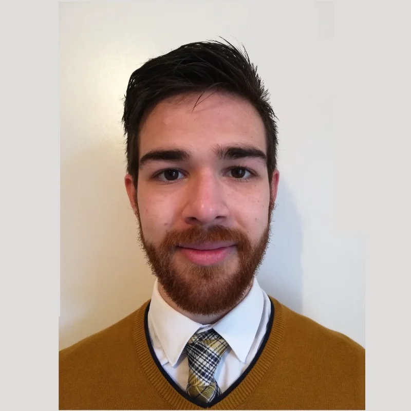

Frank Boscan | WDD130
I am a computer science major from Utah. I moved to France in 2016. My wife and I have two beautiful sons. I can't wait for more. To quote King Solomon, "As arrows are in the hand of a mighty man; so are children of the youth. Happy is the man that hath his quiver full of them" (Psalm 127:4-5). Clear, succinct, and spoken with the wisdom of a man who speaks from experience. I also enjoy rigorous exercise and unhealthy fast food. No, they are not incompatible: the former enables a hearty amount of the latter! I can't wait to tie this all together. When my boys get older, I will most definitely spend a hearty amount of time at the gym with them. More muscle mass will let us all eat burgers, fries, and shakes guilt-free. Literally no down-sides to this.
My favorite temples are the following: